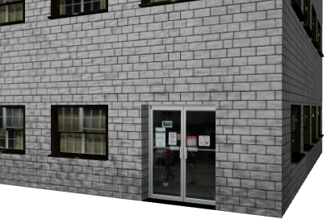
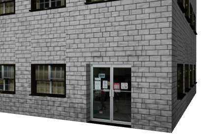
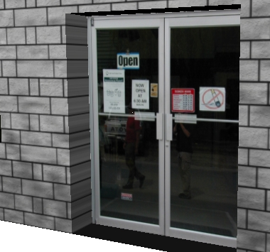
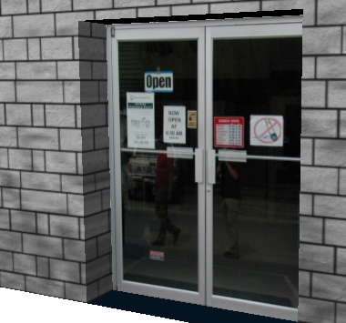
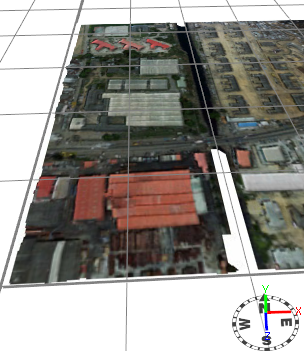
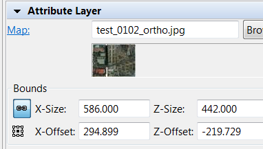
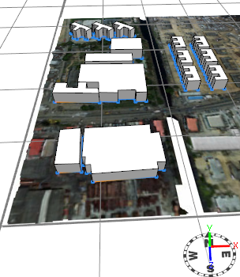
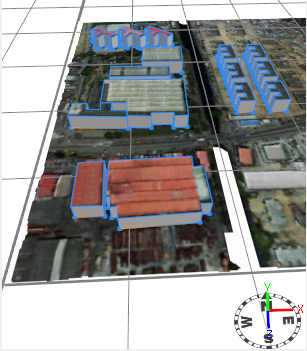

setupProjection operation
uvSet float Index of the uv-set (texture layer) to set up (integer number in [0,9]). The numbering corresponds to the texture layers of the material attribute.
axes selector Describes the origin and which axes are taken as u- and v-axes.
| scope.xy, scope.xz, scope.yx, scope.yz, scope.zx, scope.zy | Choose the scope origin and two of its axes. |
| world.xy, world.xz, world.yx, world.yz, world.zx, world.zy | Choose the world origin and two of its axes. |
textureWidth float The texture width in world coordinate system units (e.g. meters). Values < 0 are allowed and mirror the texture. The operators ~ (floating) and ’ (relative) can be used, see below.
textureHeight float The texture height in world coordinate system units (e.g. meters). Values < 0 are allowed and mirror the texture. The operators ~ (floating) and ’ (relative) can be used, see below.
widthOffset float The offset in u-direction, in world coordinate system units (e.g. meters).
heightOffset float The offset in v-direction, in world coordinate system units (e.g. meters).
uwFactor float Sets the factor by which the texture is applied on the w-axis relative to the u-axis (see examples below). The default value is 0.
The setupProjection operation initializes a projection matrix for the chosen uv-set based on the reference coordinates system specified with the axes selector. It can be chosen between scope and world coordinate systems. For example, to initialize the u- and v-axes with the x- and y-axes of the current scope, the axes selector has to be set to scope.xy. Note that some combinations result in a mirrored texture!
The textureWidth and textureHeight parameters support usage of the floating and relative operators to avoid complex calculations with the scope dimension, analogous to the transformation and split operations. For example, if the parameter textureWidth is set to ~2, the projection matrix is initialized such that the current scope width is exactly spanned with texture tiles of approximately size 2. Or if the parameter textureHeight is set to ’0.5, the texture will be repeated twice along the height.
Optionally, the influence of the pixels's z-coordinate on the w-texture coordinate relative to the u-coordinate can be set. Note that it defaults to 0 if not provided.
Related
Examples
Standard Texturing of a Building
Default Use Case
The first rule snippet shows how the setupProjection operation is used in the Frontfacade rule to define the texture coordinate system (also called "uvw" system to avoid confusion with the xyz system for the geometry) for the subsequent projectUV operations (= texture projections).
Lot -->
... Building
Building -->
... Frontfacade ...
Frontfacade -->
setupProjection(0, scope.xy, 1.5, 1, 0, 0, 1) # setup 1.5m x 1m texture tiles
setupProjection(2, scope.xy, scope.sx, scope.sy, 0, 0, 1) # using dirtmap (uvSet #2)
split(y) { groundfloor_height : Groundfloor | { ~floor_height : Floor }* }
In the second snippet we show how the projectUV operation computes new texture coordinates for the wall asset. Already existing texture coordinates on this channel are replaced. projectUV uses the uvw coordinate system previously defined by setupProjection and projects the assets vertices along the w-axis to get the new texture coordinates.
... rules for floors and facade tiles ... Wall --> color(wallColor) set(material.colormap, wall_tex) set(material.dirtmap, dirt_tex) projectUV(0) projectUV(2)
In contrast, note how the rule for the door does not use any projectUV operation to apply the texture, it just uses the generic texture coordinates from the cube asset.
Door --> s(’1,’1,0.1) t(0,0,-0.5) set(material.colormap, frontdoor_tex) primitiveCube
Scope vs. setupProjection
The example below shows the difference if we put the setupProjection command next to the projectUV in the Wall rule instead in the rule on the facade level. Please note that in the bottom picture, the brick texture does not span over the whole facade anymore; there are visible seams.

Frontfacade --> setupProjection(0, scope.xy, 1.5, 1, 0, 0, 1) setupProjection(2, scope.xy, scope.sx, scope.sy, 0, 0, 1) ... ... Wall --> color(wallColor) set(material.colormap, wall_tex) set(material.dirtmap, dirt_tex) projectUV(0) projectUV(2)

Frontfacade --> setupProjection(2, scope.xy, scope.sx, scope.sy, 0, 0, 1) ... ... Wall --> color(wallColor) setupProjection(0, scope.xy, 1.5, 1, 0, 0, 1) set(material.colormap, wall_tex) set(material.dirtmap, dirt_tex) projectUV(0) projectUV(2)
Working with the z- resp. w-coordinate

Planar texture projection along the w-axis sometimes results in artifacts like on this doorframe:

For this reason the setupProjection command has an optional parameter uwFactor which allows for the projection of the texture also along the w-direction. The value of the uwFactor specifies the tile width relative to the u-direction. This feature is sometimes useful to "bend" textures around corners and avoid excessive use of component splits.
Global Texture Projection
This example demonstrates how to quickly create textured mass models from an areal picture.

First, an attribute layer is created with the picture. This attribute layer is shown on the left. Below are the details of the attribute layer setup.


attr buildingheight = 20 Lot --> set(trim.vertical, false) extrude(buildingheight)
A number of initial shapes are manually drawn (following the countours of the buildings). Then the initial shapes are extruded to basic mass models using the extrude operation.

attr buildingheight = 20
Lot -->
set(trim.vertical, false)
extrude(buildingheight)
comp(f) {top : Roof | side : Facade}
Roof -->
setupProjection(0, world.xz, 586, 442)
projectUV(0)
scaleUV(0, 1, -1)
set(material.colormap, "test_0102_ortho.jpg")
The Roof rule is added. It projects the same texture as shown in the attribute layer onto the top faces of the mass models. The global x-axis is chosen as the u-axis, and the global z-axis as the v-axis. This results in an inverted texture along the v-axis and is corrected with the scaleUV() operation.
attr buildingheight = 20
const textureWidth = 586
const textureHeight = 442
offsetx = convert(x, scope, world, pos, 0, 0, 0) -
(convert(x, scope, world, pos, 0, 0, 0) % textureWidth)
offsetz = convert(z, scope, world, pos, 0, 0, 0) -
(convert(z, scope, world, pos, 0, 0, 0) % textureHeight)
Lot -->
set(trim.vertical, false)
extrude(buildingheight)
comp(f) {top : Roof | side : Facade}
Roof -->
setupProjection(0, world.xz, textureWidth, textureHeight,
-offsetx, offsetz)
projectUV(0)
scaleUV(0, 1, -1)
set(material.colormap, "test_0102_ortho.jpg")
Depending on the coordinate system there might be artifacts in the texture due to numerical issues. These can be avoided by using the offset parameters of the setupProjection operation.